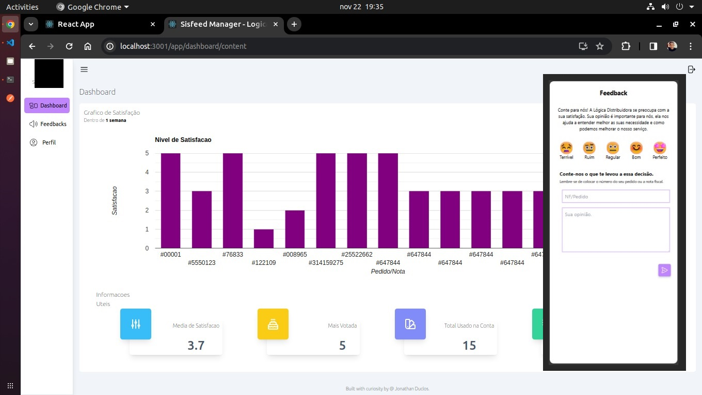
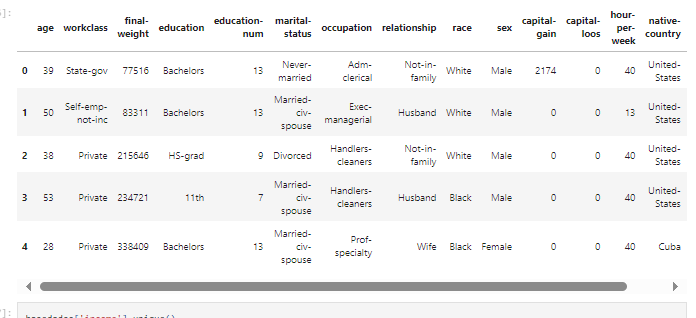
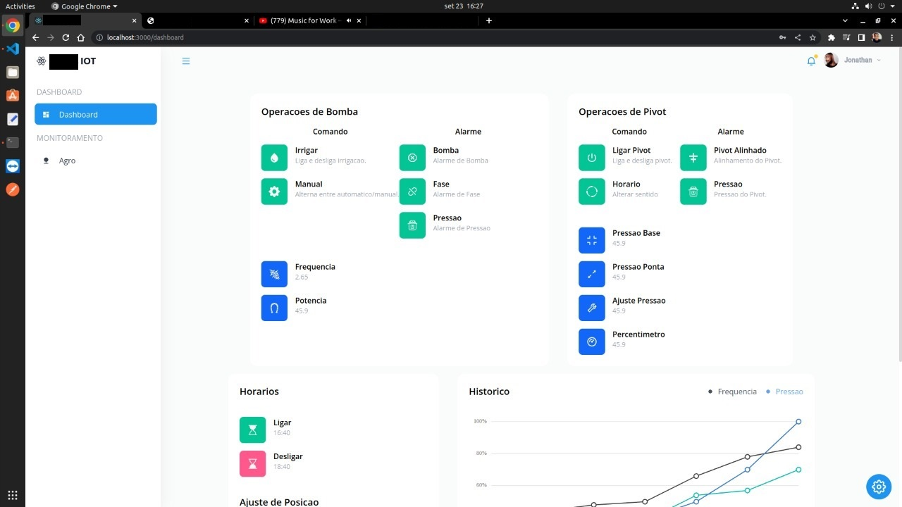

Dev. Duclos

<>
Jonathan Duclos
</>
The mission is to bring
Excellence.
An innate passion for technology, an unstoppable force in search of new things, because I know that I don't "write code or create websites", I develop ideas!
"The people who are crazy enough to think they can change the world are the ones who do"
- Steve Jobs
<>
Technologies!
</>
These are just some of the technologies or languages I use or master. Learning is a constant! Visit my Github to see more.
Technologies:
HTML5, CSS3, Javascript, Angular, React, Typescript, Python, TensorFlow, SkLearn, Bancos de Dados, NodeJs.
<>
Projects
</>
SisFeed
Frontend:
React, Tailwind CSS, Typescript
Backend:
NodeJs, MongoDB
A project to collect customer feedback using QR-Codes directly on the invoice. Through feedback, it is possible to monitor data on customer satisfaction and organize it in a way that generates knowledge.

Salary Provide Case (Machine Learning)
Frontend:
Console/Terminal
Backend:
Python 3.9, Sklearn, Pandas
A Machine Learning project to generate a model capable of predicting, according to various data entered for learning, whether a person will earn certain annual salary amounts.

SMIOS IOT
Frontend:
React, Tailwind CSS, Javascript
Backend:
Mongoose/MongoDB.
A project for maintaining an Internet of Things (I.O.T.) network that performs irrigation and control, direction control of pivots used in agronomy. Flow control, pivot on/off times, information about pumps and data history and more.

@ Jonathan Duclos - 2021